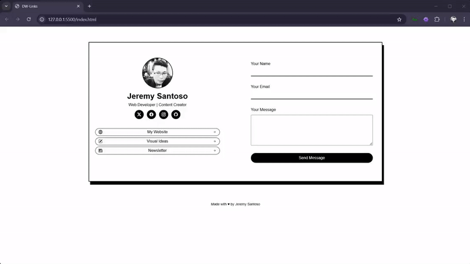
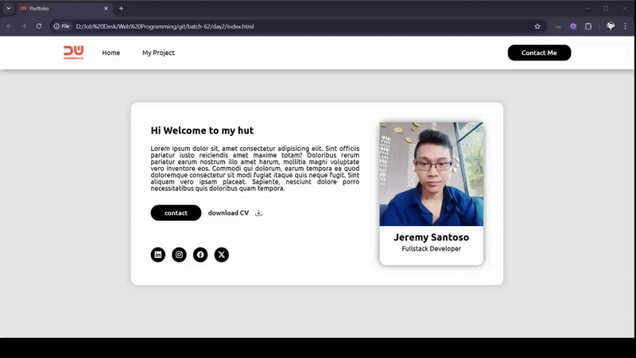
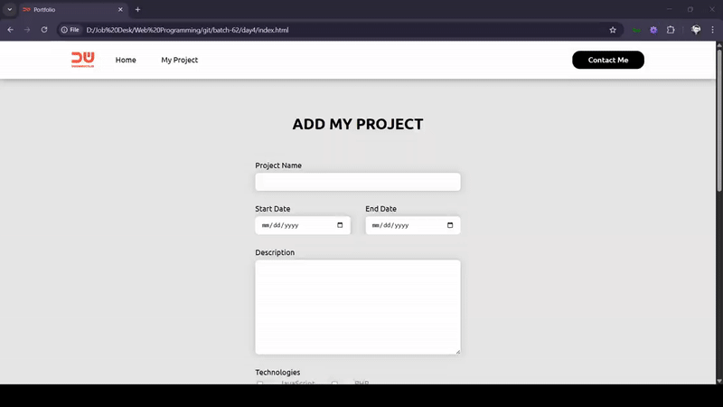

Portfolio
Newest Project
Fresh out of the code oven! This project blends speed, security, and a dash of creativity. Built with Express and Tailwind, it's where form meets function in the slickest way possible.
CSS3
Cascading Style Sheets (CSS) is a style sheet language used for specifying the presentation and styling of a document written in a markup language such as HTML or XML (including XML dialects such as SVG, MathML or XHTML).

CSS GRID
In Cascading Style Sheets, CSS grid layout or CSS grid creates complex responsive web design grid layouts more easily and consistently across browsers.
Media Query
Media queries is a feature of CSS 3 allowing content rendering to adapt to different conditions such as screen resolution (e.g. mobile and desktop screen size)
Responsive
Responsive web design (RWD) or responsive design is an approach to web design that aims to make web pages render well on a variety of devices and window or screen sizes from minimum to maximum display size to ensure usability and satisfaction.
Form
A webform, web form or HTML form on a web page allows a user to enter data that is sent to a server for processing. Forms can resemble paper or database forms because web users fill out the forms using checkboxes, radio buttons, or text fields.